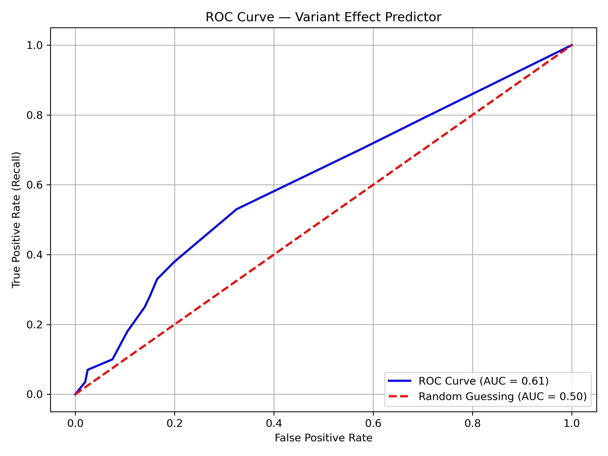
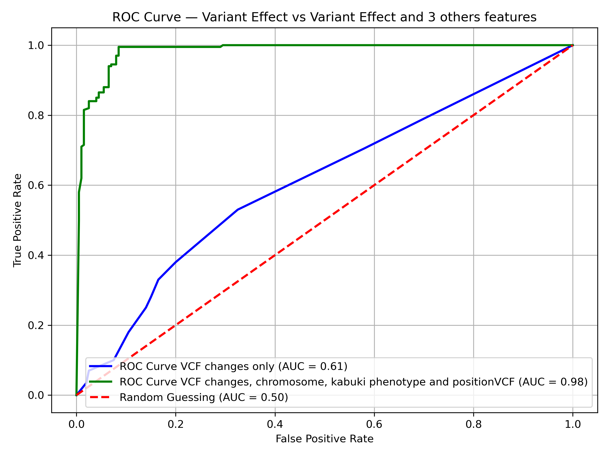

Project Overview
This project processes raw microbiome metaG shotgun sequences from 3 colon-cancer patient groups (healthy, carcinoma, and advanced adenoma) and outputs biological signals that are associated to each of these 3 stages of the disease at community, species, and functional levels. Tree random forest is applied to predict diseases from single nucleotide variant data.
Methods
This project builds a binary machine learning classifier to predict whether a single nucleotide variant (SNV) is benign or pathogenic, using publicly available data from the ClinVar database.
Data was sourced from the NCBI ClinVar database (ncbi.nlm.nih.gov/clinvar), filtered to single nucleotide variants with a classification of either Benign or Pathogenic. Features were engineered using one-hot encoding of the reference and alternate alleles from VCF annotations. A Random Forest classifier was trained using scikit-learn with class_weight="balanced" to account for class imbalance, and evaluated using precision, recall, F1-score, and ROC-AUC.
Summary Results

